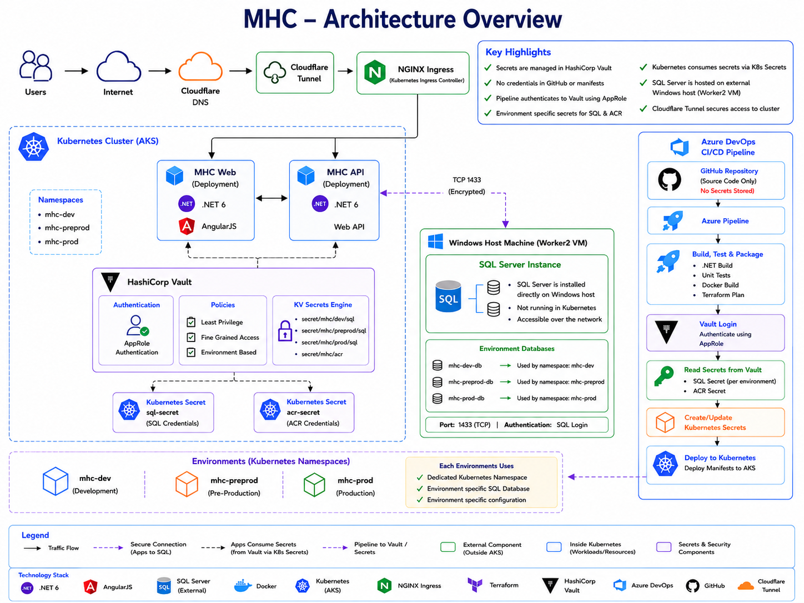
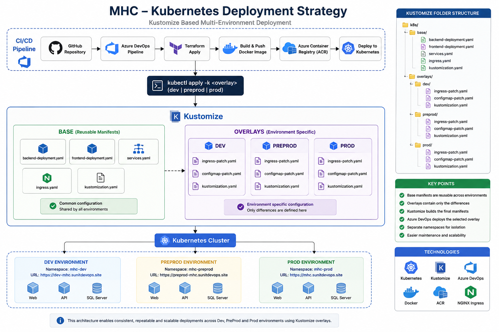
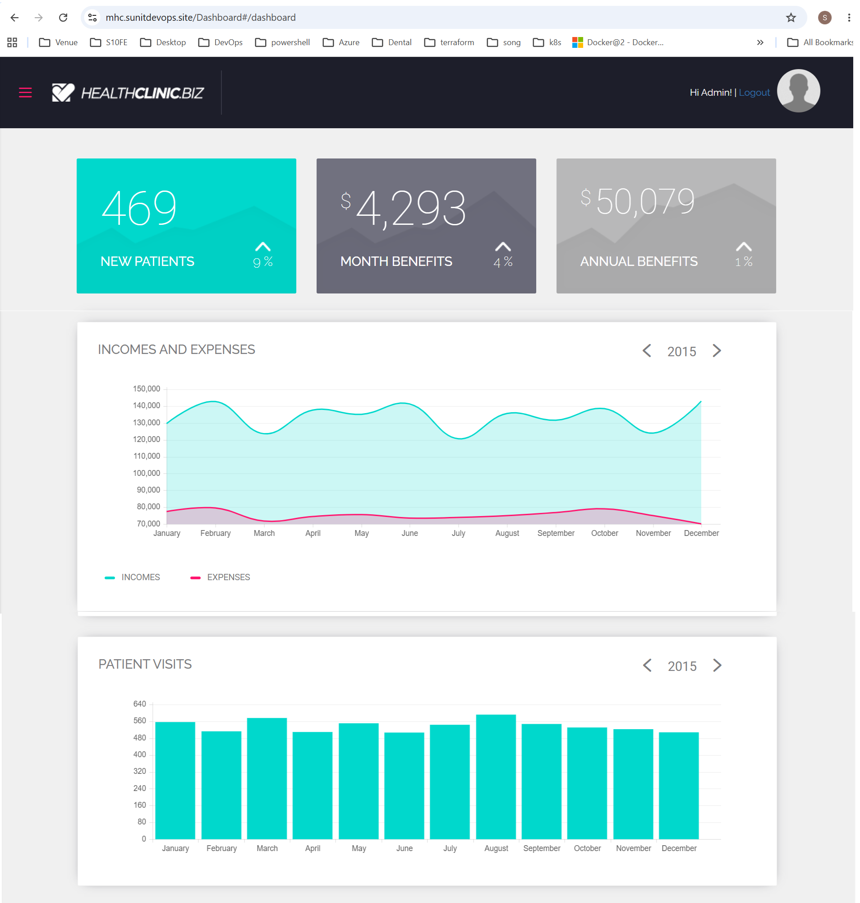
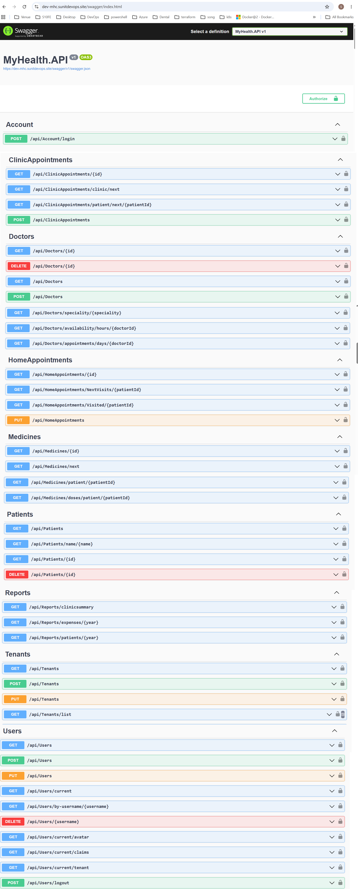
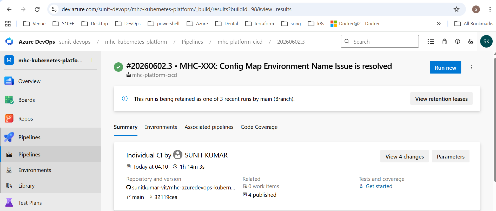
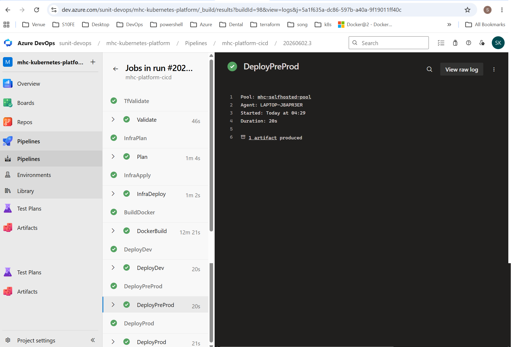
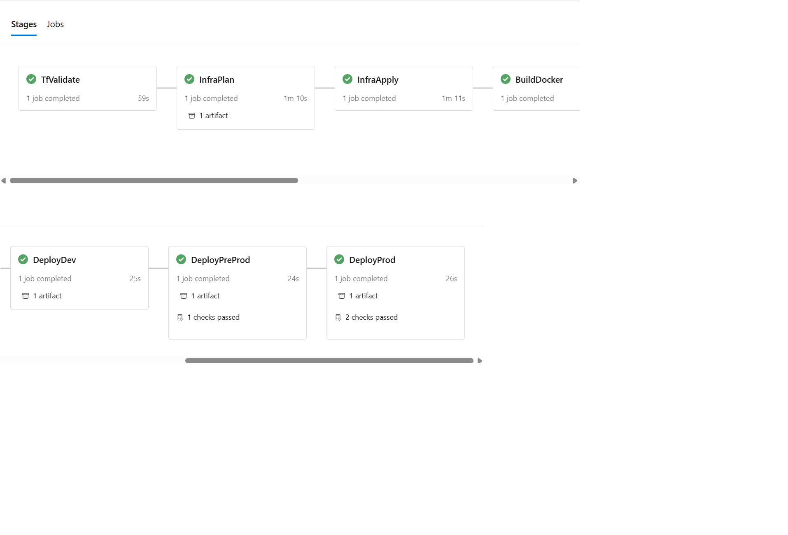
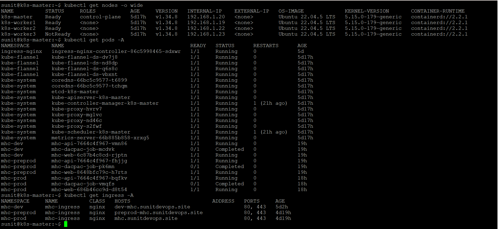

Cloud-Native Healthcare Platform demonstrating Azure DevOps, Kubernetes, Terraform, Docker, Infrastructure as Code and CI/CD best practices.
MHC (My Health Clinic) is a cloud-native healthcare SaaS platform built to demonstrate enterprise-grade DevOps, Platform Engineering, Kubernetes orchestration, Infrastructure as Code and multi-environment deployment strategies.
The project showcases end-to-end automation using Azure DevOps, Terraform, Docker, Kubernetes, SQL Server, NGINX Ingress, Cert Manager and Cloudflare.
| Category | Technology |
|---|---|
| Frontend | AngularJS |
| Backend | ASP.NET Core 6 |
| Database | SQL Server |
| Containerization | Docker |
| Orchestration | Kubernetes |
| Ingress | NGINX Ingress Controller |
| CI/CD | Azure DevOps |
| Source Control | GitHub |
| IaC | Terraform |
| Certificates | cert-manager |
| TLS | Let's Encrypt |


Reusable base manifests and environment-specific overlays for Dev, PreProd and Production deployments.
| Environment | Namespace |
|---|---|
| Development | mhc-dev |
| PreProduction | mhc-preprod |
| Production | mhc-prod |






Developer
↓
GitHub
↓
Azure DevOps Pipeline
↓
Terraform Validation
↓
Terraform Plan
↓
Terraform Apply
↓
Vault AppRole Authentication
↓
Read Secrets from Vault
(SQL Connection String / ACR Credentials)
↓
Docker Build
↓
Push Image to ACR
↓
Generate Kubernetes Secrets
↓
Kubernetes Deployment
↓
NGINX Ingress + Cloudflare Tunnel
↓
Dev → PreProd → Prod
Sunit Kumar
Azure DevOps | Kubernetes | Terraform | Cloud Platform Engineering